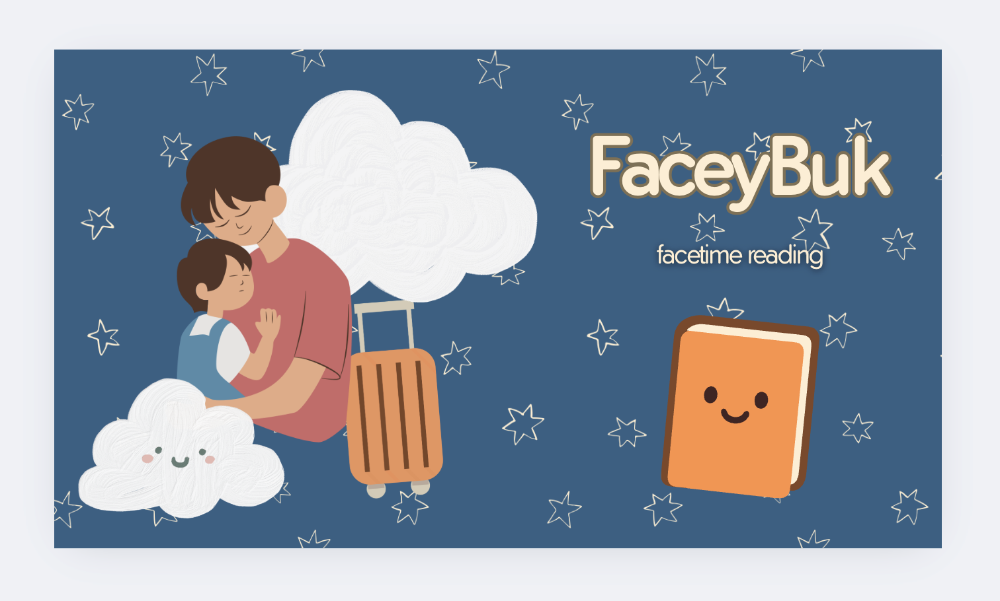

02
BUILT TO
BUILT TO
WIN.

01
1ST PLACE — NYU HACKS
1st place-winning interactive storytelling app allowing parents toread bedtime stories to their children in real time. Integrated WebRTC, Socket.IO, and ElevenLabs API for immersive experiences.
FACEY:BUK

02
1ST PLACE — 24H HACKATHON
Forensic investigation platform that automatically detects evidence in3D scenes using Google Gemini Vision API. Won 1st Place in 24-hour hackathon with 2D-to-3D coordinate mapping algorithm.
SCENE:SPAT

03
1ST PLACE — STRENGTHEN SOCIETY
Real-time IoT heatstroke alert system with AI-driven notificationengine. Won 1st Place in 'Strengthen Society' category for future vehicle safety application.